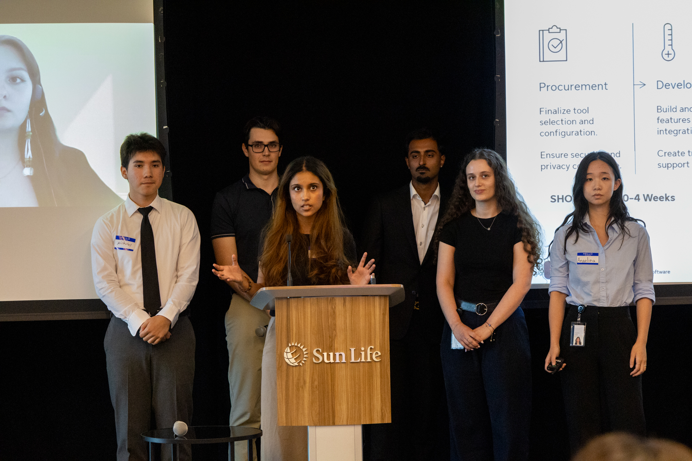
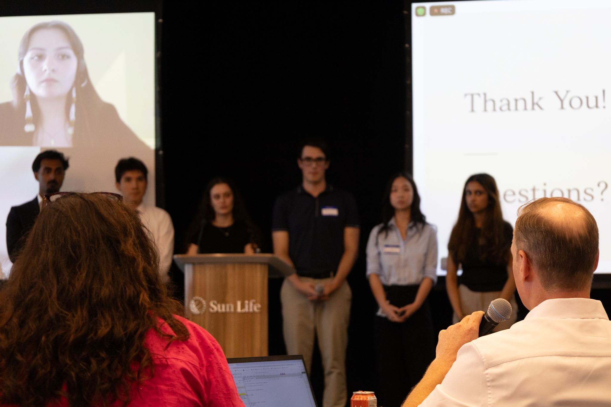
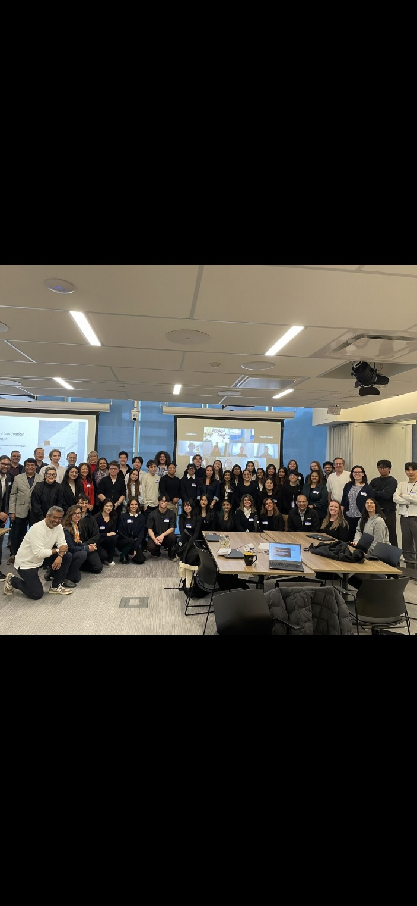

The following will highlight my work experiences and technical abilities!


This AI bot responds to a wide range of prompts by referencing source documentation, enabling it to effectively address user questions.
Above is a detailed Excel program used to manually keep track of varying factors of delivering feed to birds.
WT1: Goals & Reflection Flowchart
The folder icon contains a more detailed and older version of the following two work term goals. (Mobile users cannot see WT1 and WT2 goals as designed on smaller screen sizes. Please select folder icon.)

Where rectangle = goal, circle = plan of action, sqaure = reflection
 Understand how to effectively use Amino
Understand how to effectively use Amino
 Provide training for Amino
Provide training for Amino
 Meeting project and personal deadlines
Meeting project and personal deadlines
 Reflect on different business practices and nuances between provinces
Reflect on different business practices and nuances between provinces
 Understand business processes in manufacturing
Understand business processes in manufacturing
It’s very important to be aware of what goes on behind the scenes of getting food to consumers. It takes a lot of people across many professions to ensure quality food is sold. Using technology to optimize and enhance that process is the future of animal nutrition.
As a Project Coordinator, my biggest takeaway from my internship was seeing how things do not always go as planned, and the Amino team and I had to be agile in how we recovered from unmet goals to continue progress on a project many were passionate about!
Lastly, I wanted to acknowledge my Manager Blanca Villegas and the Preditive Ordering Project Manager Brad McIntyre for their continous support throughout both my work terms!


The above is my team and I presenting our Continuous Improvement pitch to the panel of judges and audience.
It was an amazing opportunity to work for Sun Life, I got to feel fulfilled with both work and as a co-op student looking to explore different parts of the organization.
Being a Business Systems Analyst, I was able to learn from my collegues on how they approach a problem, the questions they ask, the steps they take for troubleshooting, and what they do with this new learned information. I will be taking these lessons and applying it to every role I take on in the future!
I would like to acknowledge my managers Rob Morrison and Paul Jones for ensuring I had a fulfilling internship with a summer full of learning and opportunities. I want to give a huge shoutout to my mentors Andrew Choy and Karine Labelle for being so supportive for both work and any advise I seeked outside of my work with the team. Also wanted to acknowledge Danielle Prieur, Director of CRM & Contact Centre Application Operations, for deepining my knowledge of IT & Business. Lastly, a big thank you to the rest of the AOSQE team for all their support and guidance.
During winter 2026, I went back to Sun Life for a second term, but this time as a Cloud Infrastructure Analyst! Over the past few months I got hands on experience with AWS, presented at many events, and felt I had a very important role within my team. There were many changes along the term, and I had actually moved to a different team, but throughout all of those challenges I had a fun and meaningful co-op term.
As mentioned above Sun Life is a global financial services company, and I got to learn more about the way Sun Life utilizes cloud. The areas of computing I was exposed to throughout my term were AWS cloud services,
cloud infrastructure, & AI, specifically agentic AI. During the first half of my term I focused on cloud infrastructure for the Data Science Workbench team, however my new team the AI Delivery Excelerator, was more focused on
streamlining AI intitiaves at Sun Life as every few weeks/months there's new technology being introduced and that needs to be rolled out and tested.
Overall, I got to understand how Cloud started at Sun Life, and the direction it is heading, which is a positive one for Cloud Infrastructure Analysts, especially in the era of AI!
I was primarily responsible for enabling new Bedrock models for users in AWS, and eventually supporting the transition of that manual process into a pipeline that automatically does that for you. This responsibility strengthened my communication skills as
users may have had issues or weren't aware of all the risk assesments, process changes, and AWS specific requirements that were present for model enablements. I was also responsible for a large number of other support tickets, which involved looking at users' errors in AWS, and resolving them.
I reasearched and worked on automating self-serve capabilities for an AWS Service called Q Business to allow users to automatically connect their chatbot applications to JIRA tickets, Confluence pages, & SharePoint. My focus was specifically connecting to SharePoint, and working with AWS to understand limitations and work arounds with issues we were having with that connection.
Lastly, as a Cloud Infrastructure Analyst in the AI space, I learned about new AI initiatives, for example, AWS Bedrock AgentCore, and presented my learning and hands on workshops to 80+ people. I also presented demos in front of our whole department, as well as student innovation challenges. These presentations and demos allowed me to get a lot more visibility within the company and allowed me to have a deeper understanding of the topics I was presenting.
My other responsibilities included creating reports for some of our chatbots and how they were being used, documentation on our current processes, new AWS services and how to use them for end users, and onboarding documentation for new co-ops/hires.
Overall, the work was very interesting and a good balance between tech, leadership skills, and best business practices.
At the beginning of my work term, I set goals focused on strengthening my technical knowledge, communication abilities, teamwork, and professional development. To achieve my technological literacy goals, I worked on AWS-related projects, completed independent learning through resources such as Udemy and team documentation, and applied my knowledge through hands-on experience with cloud services and automation scripts using PowerShell and AWS CLI. I also improved my oral communication skills by presenting demos, leading meetings, and delivering presentations to both small teams and larger audiences, where I received positive feedback on my clarity and engagement.
In addition, I focused on networking and teamwork by attending team events, participating in coffee chats, and building stronger connections with colleagues across different departments. Finally, I achieved my written communication goal by creating detailed documentation and knowledge-sharing resources that supported both current team members and future co-ops in understanding processes and tools more effectively.
Below are my completed goals and reflections in more detail.
In conclusion, I really enjoyed my term, it was very challenging but rewarding at the same time. I felt like an important member of the team, and learned so much from my colleagues. After this term I am considering a career in cloud, as there's still lots to learn and career opportunities in this field of computer science.

Lastly, I wanted to give a huge shoutout to my managers Sally Tomasevic and Dan Groen for all of the support throughout my term, and I felt they were very invested in not just the work I was doing, but also my personal goals beyond that!

| Category | Details |
|---|---|
| Programming Languages | C, Java, Python, HTML, CSS, JavaScript, SQL, R, and Assembly |
| DevelopmentTools | Git, Linux, Maven, Jira, and Docker |
| Transferable Skills | Problem Solving, Detail-Oriented, Written/Verbal Communication, Collaboration, and Leadership |